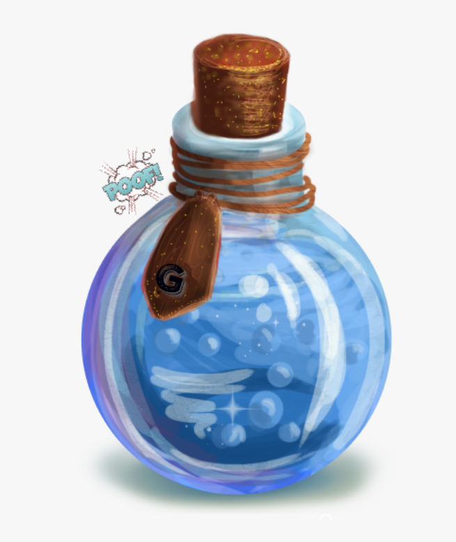

Potion of Levitation

Description
This smelly potion gives you the ability to float upwards. Be aware that your positioning is very important
with using this potion, as you can only float up and down and have no way to change directions mid-air!
This complex potion requires several intermediate ingredients and smells like rotten eggs due to the usage of
sulphur shelf in the recipe. Luckily it only tastes half as bad as it smells - still not good though.
If brewed correctly, the contents of this potion should float directly below the stopper, instead of gathering
at the bottom of the flask, as you would expect.
Ingredients
- 1 Witch Mushroom
- 5 Windblooms
- 3 Firebells
- 1 Sulphur Shelf
- 2 Waterblooms
Steps
- Firstly, crush 1 witch mushroom in the mortar and add it to the cauldron
- Crush 2 windblooms in the mortar and add them to the cauldron
- Then, crush 1 firebell in the mortar and add it to the cauldron
- Add 1 firebell to the cauldron (do not crush)
- Next, crush 1 windbloom in the mortar and add it to the cauldron
- After that, crush 1 sulphur shelf in the mortar and add it to the cauldron
- Crush 2 waterblooms in the mortar and add them to the cauldron
- The crush 1 windbloom in the mortar and add it to the cauldron
- Add 1 windbloom to the cauldron (do not crush)
- Crush 1 firebell in the mortar and add it to the cauldron
- Lastly, stir and mix well, using water to adjust viscosity until the liquid starts to float
(catch it with a flask above an inverted funnel above the cauldron)
Home